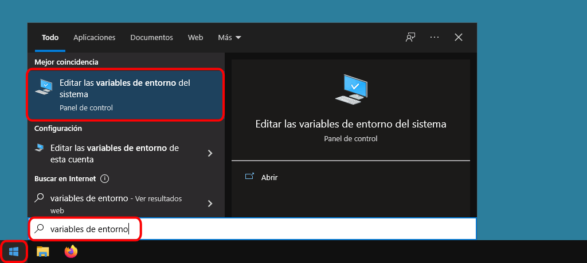
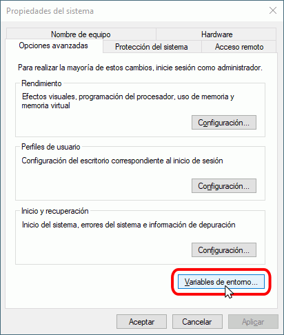
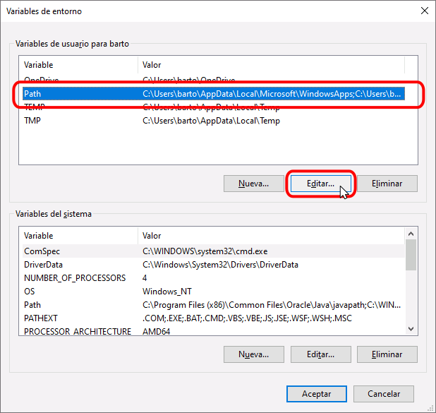
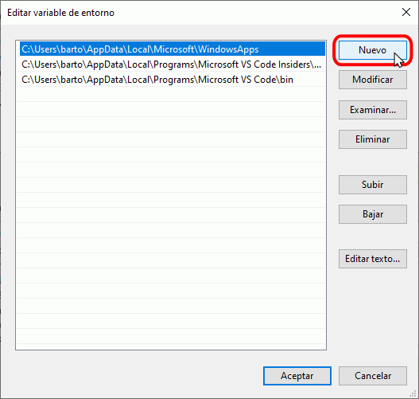
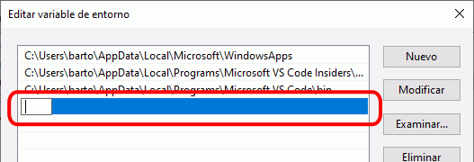
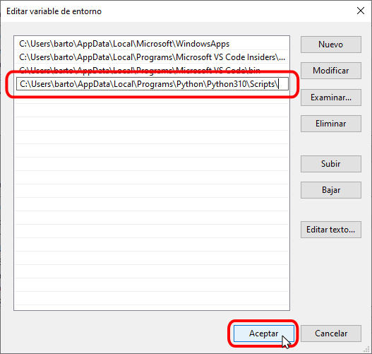

En esta lección se comentan algunos problemas que puede encontrar al utilizar MPTC y cómo intentar solucionarlos.
En algunos casos y por motivos que actualmente (marzo de 2022) no he identificado, al instalar MPTC se puede obtener un mensaje similar a este:
...
Installing collected packages: mclibre-python-testing-client
WARNING: The script mptc.exe is installed in 'C:\Users\XXXX\AppData\Local\Packages\PythonSoftwareFoundation.Python.
310_XXXXX\LocalCache\local-packages\Python310\Scripts' which is not on PATH.
Consider adding this directory to PATH or, if you prefer to suppress this warning, use --no-warn-script-location.
En ese caso, al intentar ejecutar MPTC se mostrará un mensaje de error:
C:\Users\XXXX\Documents\LMSGI\Python\pruebas>mptc prueba.py 1
"mptc" no se reconoce como un comando interno o externo,
programa o archivo por lotes ejecutable.
Nota: Las rutas que pueden verse en estos mensajes pueden ser ligeramente distintas a la del ejemplo anterior (por ejemplo, C:\Users\XXXX\AppData\Local\Programs\Python\Python310\Scripts\ o C:\Users\XXXX\AppData\Local\packages\LocalCache\local-packages\Python310\Scripts\).
Para resolver este problema, pruebe primero a reparar la instalación de Python, tal y como se comenta en la lección Instalación de Python (compruebe en concreto que esté marcada la casilla "Add Python to environment variables" en la pantalla "Advanced Options").
En caso de que la reparación de la instalación de Python no resuelva el problema, añada manualmente la ruta indicada al PATH de Windows, ejecutando los pasos siguientes:





